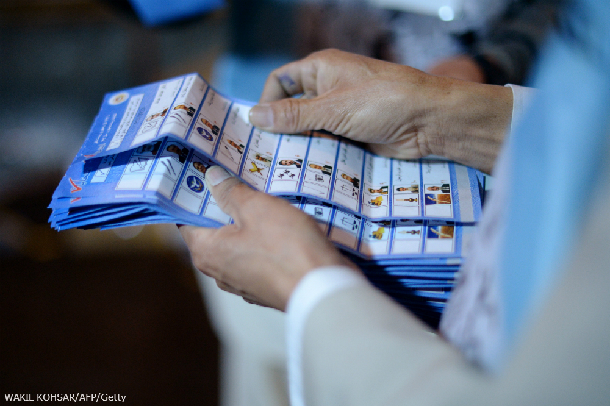

اهمیت انتخابات برای دموکراسی
نویسنده: اندرو رینولدز
تاریخ دموکراسیخواهی نشان داده که انتخابات رقابتی همواره لحظهای تاریخی بوده است؛ این لحظات سرآغاز تغییر، تولد دوباره، و تجدید حیات بودهاند. حال، با آنکه انتخابات شالوده هر دموکراسی است، در عین حال یک نهاد سیاسی مستعد فساد است. لحظه انتخابات مملو از شکنندگیها است. همان قدر که انتخابات واقعهای مثبت بوده، همان قدر نیز سرعتبخش لحظات بحرانسازی شده است که درگیریهای قومی، فروپاشی سیاسی و بیثباتی اجتماعی را تشدید کردهاند. کلید درک این مسئله که انتخابات محتملا پیشرفت به همراه میآورد یا بیثباتی، یافتن پاسخ برای پرسشهایی از این دست است که آیا فضای سیاسی آمادهی برگزاری انتخاباتی رقابتی است یا نه؛ و نیز اینکه انتخابات چگونه طراحی و اجرا میشود، سیستم انتخاباتی است.

پاسخ به این پرسش که مطابق چه شیوهای آرای ریختهشده در صندوقها به کرسیهای نمایندگی تبدیل میشوند، نه تنها تاثیر فراوانی بر تعیین انحصاری بودن یا دربرگیرنده و تمام شمول بودن انتخابات دارد، بلکه بر حال و هوای کل نظام سیاسی نیز تاثیر میگذارد. سیستم انتخاباتی همچنین فضا را برای فساد و دست بردن در آرا آماده میکند. به علاوه، سیستم انتخاباتی اعمال خلاف را از میان نخواهد برد بلکه تنها میتواند آنها را محدود کند. به این دلایل، طرحریزی سیستمهای مطلوب انتخاباتی یکی از عوامل کلیدی ساماندهی به درگیریهای سیاسی و نظام دموکراسی است.
کمارزش شمردن تاکیدی که ماموران کمکهای بینالمللی و پژوهشگران بر انتخابات به مثابه جام مقدس گذارهای دموکراتیک در کشورهای جنگزده نهادهاند گویا به امری اجباری تبدیل شده است. در کتاب «جنگ، سلاحها و آرا»، پل کالیر استدلال میکند زمانی که انتخابات ساختگی است- یعنی فاسد، پر ایراد، و "قومی" است- خشونت سیاسی تشدید میشود و دولت به قدرت رسیده بدتر از دولتی خواهد بود که قدرت را از راهی غیر از برگزاری نوعی انتخابات در دست گرفته باشد. مستبدان از طریق انتخابات متقلبانه در ظاهر "مشروعیت" یافتهاند اما مشارکت واقعی هرگز از حلقه صاحبان فعلی قدرت فراتر نرفته است. (۲۰۰۹)
البته سرزنش انتخابات به خاطر به وجود آوردن منازعات سیاسی مانند آن است که بگوییم "سقف چکه میکند ... پس ما باید بیرون از خانه زندگی کنیم تا دیگر باران بر سرمان نریزد!" نه ... شما باید سقف را تعمیر کنید. سقف به طور کلی چیز خوبی است؛ فقط باید به شکلی ساخته شود که مناسب خانه باشد. خوشبختانه، بحث کالیر پیچیدهتر از این است که "هر انتخاباتی در محیط نامناسب بد است." تحلیل او این است که "انتخابات در جوامعی که دارای جمعیت بیشتری هستند و دستهبندیهای قومی کمتری دارند بهتر عمل میکند. همچنین در نظامهایی سیاسی که قدرت دولت تحت بازرسی و نظارت است و بهویژه در جایی که رایگیری بهدرستی برگزار میشود انتخابات نتیجه بهتری میدهد." این استدلال با یک قرن فاصله مشابه استدلال جان استوارت میل در این باره است که استقرار نهادهای آزاد در کشوری که از ملیتهای مختلف تشکیل شده نزدیک به محال است. هرچند کالیر نتوانسته متغیر تعیینکنندهی شیوهی طراحی نهادها را در نظر آورد با این وجود مغز مطلب را رسانده است. طراحی نهادها در اینکه انتخابات به شیوع جنگ منجر میشود یا سازش، موثر است.
واضح است که یک انتخابات خوب و یا کمکها و توجهات خارجی بلافاصله پس از شمارش اولیه آرا، دموکراسی به بار نمیآورد. فرانسیس دنگ (۲۰۰۸:۱۳۲) محقق سودانی این مطلب را به خوبی بیان کرده است: "دموکراسی مفهومی است که خواستار مشارکت مردمی در زندگی سیاسی، اقتصادی، اجتماعی و فرهنگی کشور از طریق اصلاحات و اقدامات مستمر و جامع است نه فقط حضور سر صندوقهای رای." با این که پذیرش این موضوع که انتخابات بدون دموکراسی پیشرفت حقیقی را بیاثر میکند و اغلب به تعویق میاندازد، انتخابات به خودی خود نزد نخبگان نقطه تمرکز و پایه و اساس آن چیزی است که در پی آن میآید - خوب یا بد.
انتخابات مرحله اول مشارکت عمومی در تصویب و یا طرحریزی شیوهی حکمرانی و جزئی از روند مصالحه است. انتخابات تا حدی نمادین است؛ با این وجود ماهیتی حیاتی دارد و تنها راهی است که از طریق آن نظارت مردمی زاده میشود. دولت برای اعمال حاکمیت رضایت مردم را طلب میکند.
برای نمونه اعلامیه استقلال آمریکا اشاره دارد که "قوای عادلهی دولتهای مشروع ناشی از رضایت اتباع است". انتخابات در عین حال یک عنصر عملی نیز دارد به این معنا که بدین طریق رهبرانی انتخاب میشوند که قرار است در غنایم سهیم شوند. این جنبه بهویژه زمانی معنیدارتر است که جامعه و رایدهندگان از لحاظ قومی چندپارهاند. انتخابات اصل راهنمایی است برای شیوهی عادلانه شراکت در منابع دولت. انتخابات، احزاب و ایدئولوژیها، و نیز اجزای تشکیلدهنده جامعه را به اجماع میرساند. انتخابات به برخی از رهبران مشروعیت میبخشد و از دیگران سلب مشروعیت میکند و بدون انتخابات ملی فرایند رسیدن به دموکراسی و یا فرصت دستیافتن به روند خودبسنده و پایدار صلح ناممکن است.
همانگونه که دایاموند (۲۰۰۸:۲۶) مینویسد: "در حالی که انتخابات آزاد و عادلانه تنها یک جزء دموکراسی است اما ضروریترین جزء آن است." ادانل نیز بر نقشی تاکید دارد که انتخابات به عنوان تسهیلگر مسیر گذار از حکومت استبدادی ایفاء میکند: "این البته بدین دلیل نیست که انتخابات لزوما منجر به نتایجی شگفتانگیز خواهد شد. بدین خاطر است که انتخابات نشان خروج جدی از دلبخواهیبودن حاکمیت استبدادی است. وقتی به برخی از آزادیهای بنیادین سیاسی احترام گذاشته شود، بدین معنی پیشرفت بزرگی نسبت به حاکمیت استبدادی روی داده و دلایل کافی فراهم آمده تا به دفاع و ترویج انتخابات منصفانه مبادرت کنیم" (ادانل ۲۰۰۴:۱۸۸).
انتخابات نه تنها نقطهی گذار را مشخص میکند بلکه واقعهای است که تکرار آن برای توسعه دموکراتیک حیاتی است. چنانچه بانس (۲۰۰۸) اشاره دارد، شکستهای دموکراتیک اغلب در واکنش به انتخابات ملی رخ میدهند؛ به نظر میرسد تکرار انتخابات کیفیت دموکراسی را ارتقاء میبخشد؛ و کمک به برگزاری انتخابات تنها جایی است که کمکهای خارجی بهوضوح با بهبود عملکرد دموکراتیک همبستگی دارند. انتخابات مطلوب سرمایهی دموکراسی را در طول زمان حفظ میکند." هنگامی که مردم میبینند انتخابات بهدرستی کار میکند و موجب رقابت واقعی سیاسی و گردش قدرت میشود، و هنگامی که انتخابات برای کنترل فساد، کاهش سوءاستفاده از قدرت و حصول اطمینان از حاکمیت قانون کوچکترین تاثیری داشته باشد، احتمال بیشتری میرود که مردم از دموکراسی حمایت کنند." (دایاموند ۲۰۰۸:۱۶۱).
افغانستان، مغولستان و سنگاپور سه نمونه از دههی گذشته هستند که نشان میدهند شکست انتخابات موجب بهتعویق افتادن پیشرفت دموکراتیک شده است. در افغانستان سال ۲۰۰۵، بر خلاف آنچه افکار عمومی انتظار داشت، انتخابات به دلیل تقلب به شکست نیانجامید بلکه شکست آن به این دلیل بود که سیستم انتخاباتی موجب چندپارگی مجلس قانونگذاری و مانع پیشرفت نظام حزبی در آن کشور بود (البته انتخابات ریاستجمهوری سال ۲۰۰۹ به دلیل تقلب به شکست انجامید). در مغولستان، از سال ۱۹۹۰ انتخابات به طور فزایندهای مشروعیتش را از دست داد، اما نه به خاطر بینظمیهای متداول، بلکه به این دلیل که سیستم انتخاباتی هنگام تخصیص کرسیهای نمایندگی بر اساس آرای ماخوذه به طور سخاوتمندانه به یک حزب برتری میداد و طرف دیگر را تنبیه میکرد (نگاه کنید به فریتز ۲۰۰۸؛ فیش ۲۰۰۱). سنگاپور مورد متداولی است که در آن سیستم انتخاباتی برای جلوگیری از بهاکثریترسیدن یا حتی شنیدهشدن صدای مخالف هزاران رروش تعبیه کرده است (نگاه کنید به فتزر ۲۰۰۸).
اگر در کشوری که در حال پیادهسازی دموکراسی است انتخابات بهدرستی کار نکند پایهای نخواهد بود تا بنای دموکراسی بر آن بایستد.
منبع: دورههای آموزشی بریج